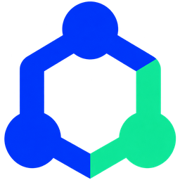

Declarative
An agent is a YAML resource. Review it in a pull request, deploy it with GitOps, roll it back like any Deployment.

crewkubeDesign phase · Apache 2.0
Crewkube is an open-source framework for defining, deploying, and connecting task-focused AI agents. Start with one agent, grow into a multi-agent application, and deploy and scale each agent independently, alongside the microservices and workflow engines you already run.
Most agent frameworks are libraries: the agent lives inside one process, and deploying, securing, and scaling it is left to you. Crewkube makes each agent a Kubernetes resource.
An agent is a YAML resource. Review it in a pull request, deploy it with GitOps, roll it back like any Deployment.
Every agent has its own Pod, Service, identity, and scaling. Change one agent and only that agent rolls out.
Agents expose named, versioned interfaces that services, CronJobs, CI pipelines, and workflow engines call over plain HTTP.
An agent can only call the tools and peer agents it declares, and each destination decides who may call it.
Bring the agent runtime you prefer. Any runner image that implements the runtime contract works; your callers see the same API.
Agents sit next to your microservices, MCP tool servers, and workflow engines. Nothing has to be rewritten.
Illustrative only. The API is a draft and not yet implemented.
apiVersion: crewkube.com/v1alpha1
kind: Agent
metadata:
name: triage
spec:
instructions: |
Classify incidents and recommend next steps.
harness:
adapter: claude-code
image: registry.example.com/crewkube/claude-triage:0.1.0
interfaces:
- name: classify
version: v1
allowedCallers:
- serviceAccount: incident-api
tools:
- name: summarizeLogs
target:
agent: { name: log-summary, interface: summarize }kubectl apply -f triage.yaml
curl -X POST http://triage/v1/interfaces/classify -d '{"input": {...}}'Agents decide, workflows order. Crewkube does not replace workflow engines. When steps must run in a fixed order, with approvals or durable retries, use a workflow engine and have it call agent interfaces.
Agent CRD, reference harness: a single callable agent.